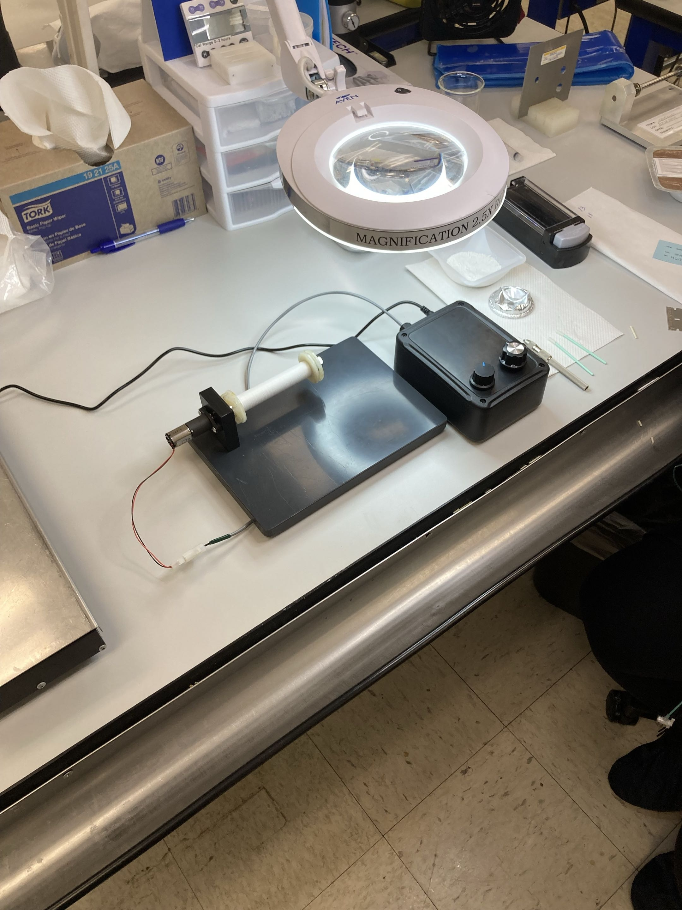
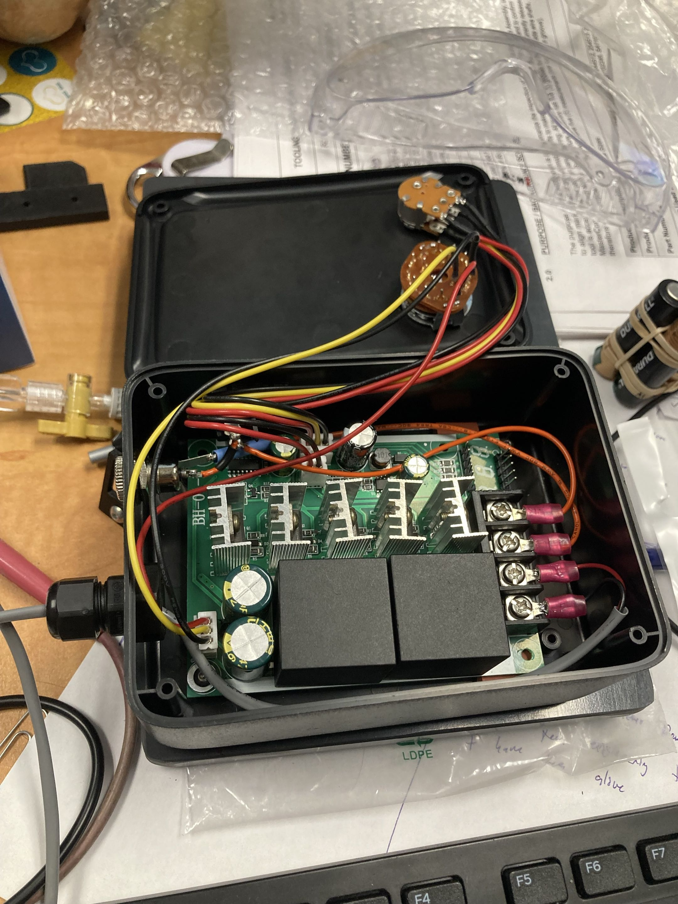
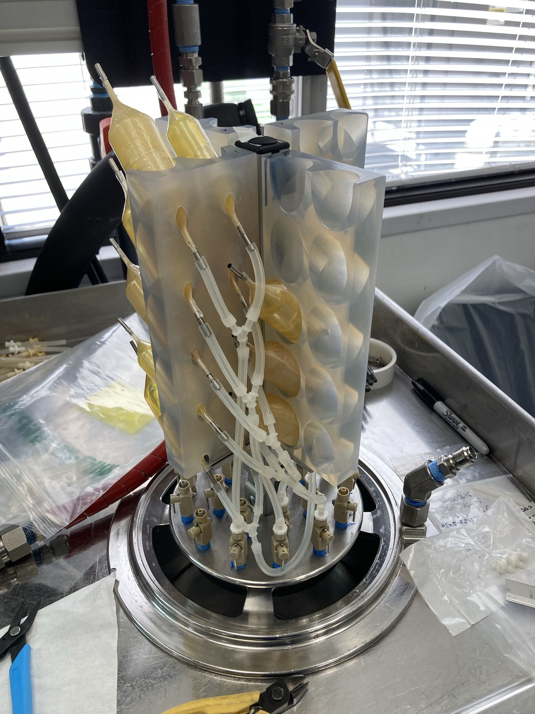

BD medical
May 2024 to August 2024
BD.... I was responsible for helping the manufacturing floor with improvements through implementing new devices to aid floor workers. This included permanent equipment upgrades, guarding, operator tools, and process fixturing. I was also involved in a kaizen event, having to make rapid prototype improvements, leading to $50K in annual savings. One of the bigger projects I had over the internship was also a controlled fiber system. This device was designed and built to control the fiber used in the construction of a valvuloplasty balloon, improving user ergonomics and reducing waste.
Servo Controlled Fiber System.... The goal of this project was to create a system to prevent the floor workers from getting repetition injuries from tying the thread in the manufacturing process. The solution I prototypes was a servo-controlled system that automatically spins the correct amount of thread needed and holds the thread tight as it is being used. It also had the capabilities to have Wi-Fi connected monitoring to get analytics on thread usage and process time.
 |
 |
Kaizen Event.... Participated in an internal Kaizen event focused on the 023 product line. One of the key contributions was designing a pressurized bladder clamp, replacing the current 14 bolt design with a cam lever design to reduce time and noise. A flush fixture was also developed to increase the capacity of the machine. Alongside these tooling designs, several broader process improvements were identified and implemented over the course of the event to reduce waste and improve flow on the line.

Last Updated:
End of Page